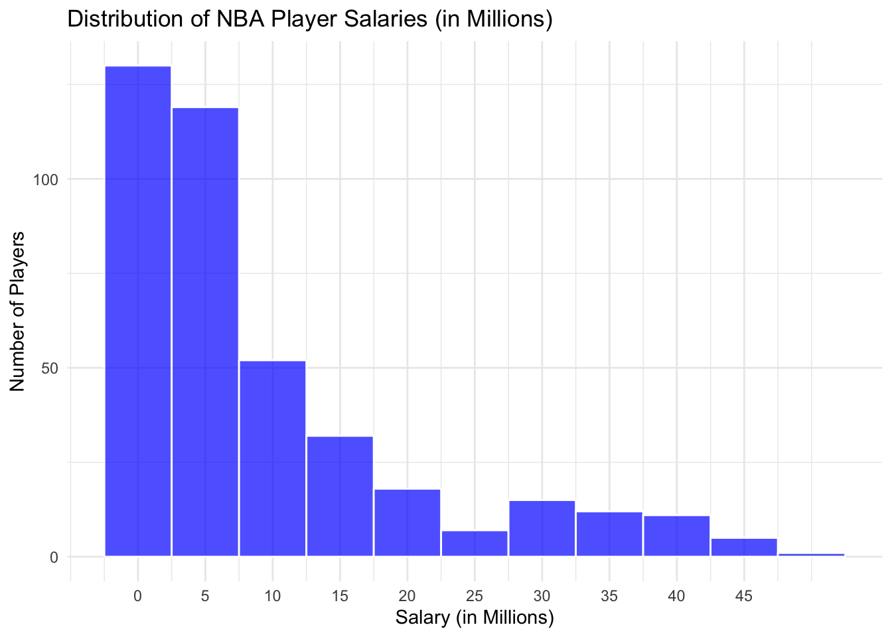
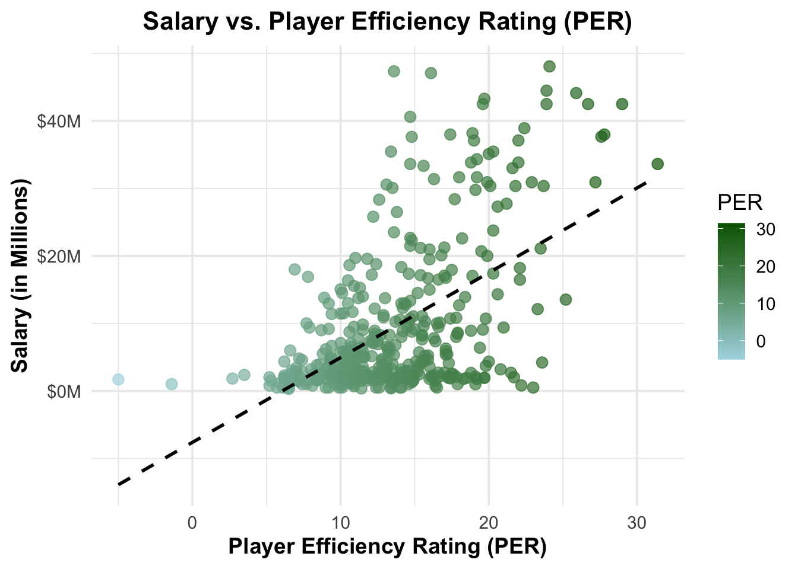
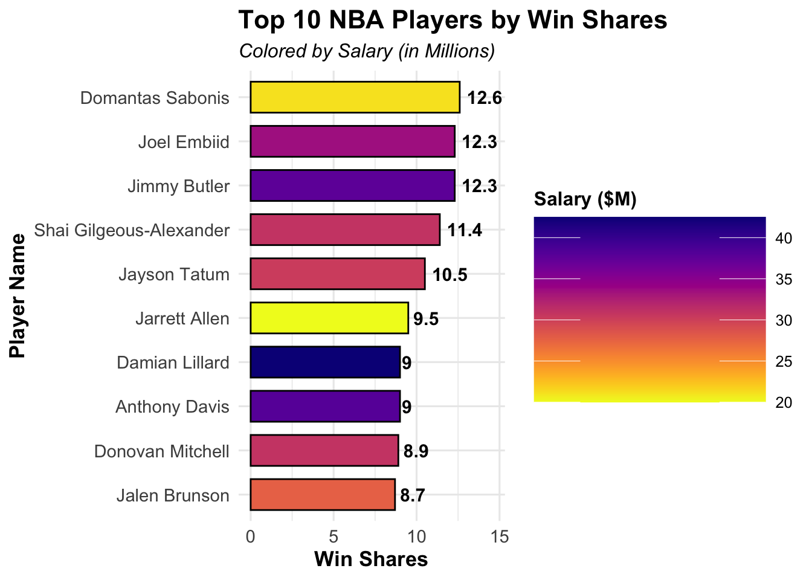

Shooting for Success: Analyzing NBA Player Performance and Value 🏀
Author
Jake Starkey
Introduction
Background 💻
Basketball is a data-rich sport where player performance directly impacts team success. Understanding key statistics can help teams make better decisions about player value, game strategy, and resource allocation. This project dives into the 2022-23 NBA player dataset to uncover insights that could influence team building and player development.
Statement of the Project Interest
The goal of this project is to analyze the relationship between player performance metrics (offensive and defensive) and their salaries. We aim to identify what stats correlate most with high salaries and whether there are undervalued players based on their contributions.
Data Storytelling 📖
Questions and Objectives
What performance metrics are most strongly correlated with player salaries?
Are there any undervalued players based on performance statistics?
How do offensive and defensive metrics compare in their influence on salary?
What patterns emerge among players with high Player Efficiency Ratings (PER) and Win Shares (WS)?
How does a player’s. scoring efficiency (True Shooting Percentage) compare to their salary?
Data Transformation and Descriptive Statistics
To prepare the data and highlight key takeaways, we performed the following steps:
Data Cleaning
# Load necessary librarieslibrary(tidyverse)
Warning: package 'dplyr' was built under R version 4.2.3
── Attaching core tidyverse packages ──────────────────────── tidyverse 2.0.0 ──
✔ dplyr 1.1.4 ✔ readr 2.1.4
✔ forcats 1.0.0 ✔ stringr 1.5.0
✔ ggplot2 3.4.4 ✔ tibble 3.2.1
✔ lubridate 1.9.4 ✔ tidyr 1.3.0
✔ purrr 1.0.2
── Conflicts ────────────────────────────────────────── tidyverse_conflicts() ──
✖ dplyr::filter() masks stats::filter()
✖ dplyr::lag() masks stats::lag()
ℹ Use the conflicted package (<http://conflicted.r-lib.org/>) to force all conflicts to become errors
# Load the NBA datasetnba_players <-read_csv("http://bcdanl.github.io/data/nba_players.csv")
Rows: 467 Columns: 51
── Column specification ────────────────────────────────────────────────────────
Delimiter: ","
chr (3): PlayerName, Position, Team
dbl (48): Salary, Age, GP, GS, MP, FG, FGA, FG_pct, 3P, 3PA, 3P_pct, 2P, 2PA...
ℹ Use `spec()` to retrieve the full column specification for this data.
ℹ Specify the column types or set `show_col_types = FALSE` to quiet this message.
# Data cleaning: Remove outliers and invalid entriesnba_players_clean <- nba_players %>%filter(!is.na(Salary) & Salary >0& GP >10) %>%# Remove players with missing or zero salary, and low game participationmutate(Salary_Millions = Salary /1e6) # Convert salary to millions for easier readability
Findings: This cleaning ensures our analysis focuses on active players with meaningful contributions, avoiding noise from incomplete or irrelevant data points.
Key Summary Statistics
The following code calculates averages for key metrics like salary, points per game (PTS), Player Efficiency Rating (PER), and Win Shares (WS).
Findings: The calculated averages provide a baseline for comparing individual players. For example: - Average salary: $9.55 million - Average points per game: 9.96 points
These values help identify outliers and standout players.
Correlation Analysis
This code computes the correlation matrix to explore relationships between salary and performance metrics. Higher correlations indicate stronger relationships.
# Compute correlations between salary and performance metricscorrelation_matrix <- nba_players_clean %>%select(Salary_Millions, PER, WS, TS_pct, PTS, AST, STL, BLK) %>%cor()print(correlation_matrix)
Findings: Metrics like PTS, AST, PER, and WS are likely to show strong correlations with salary, suggesting they are key indicators of player value.
Data Visualization
Salary Distribution
This histogram shows how player salaries are distributed across the league, emphasizing the disparities between top earners and the rest.
library(ggplot2)# Histogram of salary distributionsalary_plot <-ggplot(nba_players_clean, aes(x = Salary_Millions)) +geom_histogram(binwidth =5, fill ="blue", color ="white", alpha =0.7) +labs(title ="Distribution of NBA Player Salaries (in Millions)",x ="Salary (in Millions)",y ="Number of Players") +scale_x_continuous(breaks =seq(0, max(nba_players_clean$Salary_Millions), by =5)) +theme_minimal()print(salary_plot)

Findings: Most players earn less than $10 million per season, with a few outliers earning significantly more.
Correlation Heatmap
This heatmap visualizes the strength of relationships between salary and various performance metrics.
Findings: Strong correlations between salary and metrics like PTSPER, WS, and AST suggest these are key drivers of player compensation.
Scatterplot of Salary vs. PER
library(scales)
Attaching package: 'scales'
The following object is masked from 'package:purrr':
discard
The following object is masked from 'package:readr':
col_factor
scatter_salary_per <-ggplot(nba_players_clean, aes(x = PER, y = Salary_Millions, color = PER)) +geom_point(alpha =0.7, size =3) +geom_smooth(method ="lm", se =FALSE, color ="black", linetype ="dashed") +scale_color_gradient(low ="lightblue", high ="darkgreen") +labs(title ="Salary vs. Player Efficiency Rating (PER)",x ="Player Efficiency Rating (PER)",y ="Salary (in Millions)",color ="PER" ) +scale_y_continuous(labels =dollar_format(prefix ="$", suffix ="M")) +theme_minimal(base_size =14) +theme(plot.title =element_text(face ="bold", size =16, hjust =0.5),axis.title.x =element_text(face ="bold"),axis.title.y =element_text(face ="bold") )print(scatter_salary_per)
`geom_smooth()` using formula = 'y ~ x'

Findings: Some players are shown with high PER have relatively low salaries, highlighting potential undervalued players. This means that they are highly efficient yet are paid lower than they deserve.
Top 10 Players by Win Shares ⛹️♂️
This bar chart compares the Win Shares (WS) of the top 10 players with their corresponding salaries.
# Identify top 10 players by Win Sharestop_players_ws <- nba_players_clean %>%arrange(desc(WS)) %>%slice(1:10) %>%relocate(WS, .after = Salary)print(top_players_ws)
library(ggplot2)library(viridis) # for prettier color gradients
Warning: package 'viridis' was built under R version 4.2.3
Loading required package: viridisLite
Attaching package: 'viridis'
The following object is masked from 'package:scales':
viridis_pal
library(ggthemes) # optional, for additional theme options
Warning: package 'ggthemes' was built under R version 4.2.3
# Enhanced bar chartbar_top_ws <-ggplot(top_players_ws, aes(x =reorder(PlayerName, WS), y = WS, fill = Salary_Millions)) +geom_bar(stat ="identity", color ="black", width =0.7) +coord_flip() +geom_text(aes(label =round(WS, 1)), hjust =-0.2, size =4, fontface ="bold") +# Add data labelsscale_fill_viridis(option ="plasma", direction =-1, name ="Salary ($M)", guide =guide_colorbar(barwidth =10, barheight =8)) +labs(title ="Top 10 NBA Players by Win Shares",subtitle ="Colored by Salary (in Millions)",x ="Player Name",y ="Win Shares" ) +theme_minimal(base_size =12) +theme(plot.title =element_text(face ="bold", size =16),plot.subtitle =element_text(face ="italic", size =12),axis.title.x =element_text(face ="bold", size =13),axis.title.y =element_text(face ="bold", size =13),axis.text =element_text(size =11),legend.title =element_text(face ="bold"),legend.position ="right" ) +ylim(0, max(top_players_ws$WS) +2) # Add space for text labelsprint(bar_top_ws)

Findings: The highest-performing players (by WS) tend to have high salaries, although there are a few exceptions. For example, Domantas Sabonis is the number one NBA player by win share, but his salary is the second lowest among top 10 players by win share. Jarret Allen is another example he is 6th in the NBA in win share yet he is being paid the lowest by any of the top 10 players by win share. This tells us that Sabonis and Allen are extremely undervalued and contribute to their teams winning percentage at a lower price compared to others in the NBA.
Offensive vs. Defensive Metrics and Salary 📈
Below is a chart showing the Offensive and Defensive Metrics for the top 10 highest paid NBA players. The goal is to see which performance metrics (offensive or defensive) contribute to a players salary more.
Findings 1. Offesive Metrics Dominate (PTS and AST)
Points (PTS): The PTS (light blue bars) are significantly higher for all players compared to other metrics. This suggests that scoring ability is a major factor contributing to high salaries.
For example, Giannis Antetokounmpo, Stephen Curry, and Damian Lillard have extremely high PTS values, indicating their scoring dominance.
Players like Kevin Durant and Lebron James also exhibit high PTS, reinforcing the importance of offensive capabilities.
Assists (AST): The AST (green bars) are the second-highest metric for most players, especially for those known as playmakers, such as LeBron James, Russell Westbrook, and Stephen Curry. This indicates that playmaking ability is another key factor in high salaries.
Defensive Metrics Are Less Prominent (BLK and STL)
Blocks (BLK): The BLK (purple bars) are relatively low for all players, even for those known for their defensive prowess, like Kawhi Leonard and Giannis Antetokounmpo. This suggests that blocking is not a significant determinant of salary for these top players.
Steals (STL): The STL (orange bars) are also consistently low across all players, indicating that steals, like blocks, have less influence on salary when compared to offensive metrics.
Balanced Players Are More Valued
Some players demonstrate a balance between offensive (PTS and AST) and defensive (STL and BLK) metrics. For example:
Giannis Antetokounmpo and LeBron James show relatively higher values in both offensive and defensive categories, making them versatile players.
Kawhi Leonard shows moderate contributions in all metrics, aligning with his reputation as a two-way player.
Outliers in Specific Metrics
Stephen Curry: Has the highest PTS value but relatively lower defensive metrics, emphasizing his role as a scoring specialist.
Russell Westbrook: Shows higher AST values compared to most other players, highlighting his playmaking ability.
Key Conclusions:
Offensive contributions (PTS and AST) have a stronger influence on salary than defensive contributions (BLK and STL).
Players who excel in scoring (e.g., Curry, Durant, James) or playmaking (e.g., Westbrook, James) are more highly compensated.
Defensive metrics, while still important are less impactful on salary for these top players, due to the heightened difficulty to achieve higher defensive statistics although balanced players like Giannis and LeBron are exceptions.
This analysis ties the metrics back to salary by showing that offensive capabilities are the primary drivers of high compensation. - In the NBA, while being a great defensive player is important, todays fast paced, high scoring game favors players who can score a lot of points, hence the top 10 paid players all having high offensive statistics.
Interactive Scatterplot of Salary vs. True Shooting Percentage (TS%) 📊
Warning: package 'plotly' was built under R version 4.2.3
Attaching package: 'plotly'
The following object is masked from 'package:ggplot2':
last_plot
The following object is masked from 'package:stats':
filter
The following object is masked from 'package:graphics':
layout
# Set a minimum threshold for total minutes playedmin_minutes <-1000# Filter dataset to include players with at least 'min_minutes'filtered_nba_data <- nba_players_clean %>%filter(TotalMinutes >= min_minutes) # Replace 'TotalMinutes' with your actual column name# Scatterplot: Salary vs. True Shooting Percentage (TS%)scatter_salary_ts <-ggplot(filtered_nba_data, aes(x = TS_pct, y = Salary_Millions, text =paste("<b>Player:</b>", PlayerName, "<br><b>TS%:</b>", scales::percent(TS_pct, accuracy =0.1),"<br><b>Salary:</b>", scales::dollar(Salary_Millions, prefix ="$", suffix ="M"),"<br><b>Total Minutes Played:</b>", TotalMinutes ))) +geom_point(color ="#1f78b4", alpha =0.8, size =2) +# Blue points with transparencygeom_smooth(method ="lm", se =FALSE, color ="#ff7f00", size =1.2) +# Orange trend linelabs(title ="Interactive Scatterplot: Salary vs. True Shooting Percentage (TS%)",subtitle =paste("Players with at least", min_minutes, "Total Minutes Played"),x ="True Shooting Percentage (TS%)",y ="Salary (in Millions)" ) +scale_x_continuous(labels = scales::percent_format(), limits =c(0.45, 0.75),breaks =seq(0.45, 0.75, by = .05), # Assuming TS% ranges between 40% and 70%expand =c(0, 0) ) +scale_y_continuous(labels = scales::dollar_format(prefix ="$", suffix ="M"), limits =c(0, 50), # Assuming salary ranges up to $50Mexpand =c(0, 0) ) +theme_minimal(base_size =14, base_family ="Arial") +theme(plot.title =element_text(face ="bold", size =16, hjust =0.5),plot.subtitle =element_text(face ="italic", size =12, hjust =0.5, color ="gray40"),axis.title.x =element_text(face ="italic", size =12),axis.title.y =element_text(face ="italic", size =12),axis.text =element_text(size =10),panel.grid.major =element_line(color ="gray80", size =0.5),panel.grid.minor =element_blank(),legend.position ="none" )
Warning: Using `size` aesthetic for lines was deprecated in ggplot2 3.4.0.
ℹ Please use `linewidth` instead.
Warning: The `size` argument of `element_line()` is deprecated as of ggplot2 3.4.0.
ℹ Please use the `linewidth` argument instead.
# Convert the ggplot object to an interactive plotinteractive_scatter_salary_ts <-ggplotly( scatter_salary_ts, tooltip ="text"# Display the custom tooltip text)
`geom_smooth()` using formula = 'y ~ x'
# Save the interactive plot as an HTML filehtmlwidgets::saveWidget( interactive_scatter_salary_ts, "interactive_scatter_salary_ts_filtered_minutes.html", selfcontained =TRUE)# Print the interactive plot to view in RStudiointeractive_scatter_salary_ts
Above is an interactive plot showing the relationship between True Shooting Percentage and Player Salaries.
Significance of the Project 🔊
Why These Findings Matter
The insights uncovered in this project go beyond basketball and can be applied to several real-world scenarios:
Influencing Business Decisions in Sports:
Salary Optimization: Teams can use the findings to identify undervalued players whose contributions (e.g., high PER or WS) exceed their current salaries. This can guide better salary negotiations and resource allocation.
Player Evaluation: By understanding which metrics (e.g., offensive contributions like PTS and AST) strongly influence salaries, teams can refine their scouting and recruitment strategies to focus on high-impact players.
Data-Driven Contracts: Teams can use this analysis to structure contracts that better reflect a player’s overall value, balancing offensive and defensive contributions.
Broader Applications Beyond Sports:
Workforce Compensation Analysis: Just as we analyzed player salaries, organizations in other industries can use data to ensure fair and performance-based compensation for employees.
Influencing Public Policy: The methodology of linking measurable performance metrics to pay could also be applied in sectors like education, healthcare, and public services to assess resource allocation and equity.
Enhancing Fan Engagement:
Fans love debating whether players are underpaid or overpaid. This analysis provides a data-backed framework for fans, sports journalists, and commentators to discuss player value and team-building strategies.
Connecting to Broader Themes
Data-Driven Decision-Making: This project underscores how data can lead to more informed, fair, and efficient decisions in any industry.
Value Assessment: By identifying inefficiencies and patterns in compensation, we can promote better allocation of resources, whether in sports or other fields.
Contains player performance metrics and salary data for the 2022-23 NBA season.
AI Assistance
This project benefited from the use of GitHub Copilot, a code-generation and AI assistant tool.
GitHub Copilot was employed to:
Refine code aesthetics, such as improving themes, scales, and formatting for better presentation.
Provide insights and guidance on implementing project-specific requirements (e.g., filtering datasets, embedding interactive visualizations).
Answer technical questions and suggest best practices for reproducible and professional code.
Help to refine errors and troubleshoot incorrect code.
GitHub Copilot facilitated faster implementation and enhanced the overall quality of the project by offering suggestions and reducing development time.
Note: All outputs from GitHub Copilot were reviewed and validated by the project team to ensure accuracy and relevance to the project goals.